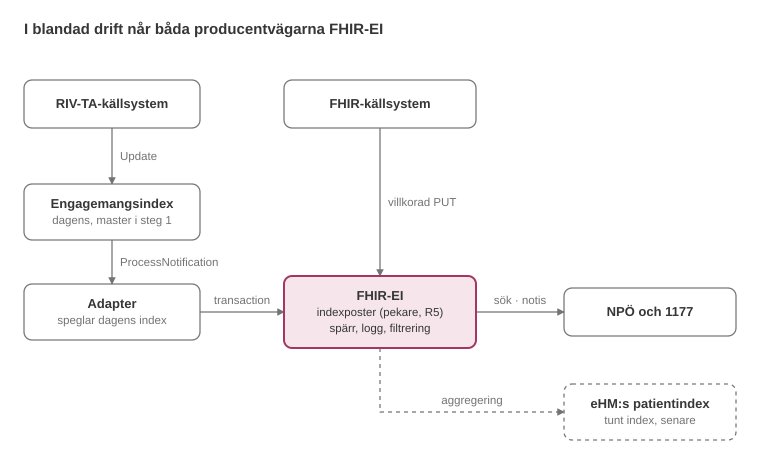

FHIR-baserat engagemangsindex (FHIR-EI)
0.1.0 - ci-build

FHIR-baserat engagemangsindex (FHIR-EI)
0.1.0 - ci-build

FHIR-baserat engagemangsindex (FHIR-EI) - Lokal utvecklingsbygge (v0.1.0) byggt av FHIR (HL7® FHIR® Standard) Build Tools. Se katalogen över publicerade versioner
Leveransgarantin är minst den samma som idag: en ändring i källsystemet ska nå indexet utan förlust, i rätt ordning per post, och kunna återhämtas efter avbrott. Det gäller alla försörjningssätt. Vid producentregistrering och spegling uppfylls den av kraven nedan. Vid Inera-försörjd cache uppfylls den av färskhållningen: en inaktuell cachepost bekräftas mot källan innan den lämnas ut.
| Krav | Innebörd | Hur det uppfylls |
|---|---|---|
| Idempotens | Samma händelse två gånger ger samma resultat | Uppdatering och avregistrering sker villkorat på identifier, som är bunden till den registrerande parten |
| Ordning per post | Sena eller omkastade händelser skriver inte över nyare | En uppdatering med äldre contentLastUpdated än den lagrade ignoreras. En avregistrering kan bara upphävas av en ny registrering med senare contentLastUpdated |
| Minst en leverans | Ingen händelse går förlorad | Den registrerande parten försöker igen tills FHIR-EI kvitterat. Ej levererbara händelser hamnar i en kö för manuell hantering |
| Atomicitet | En samling ändringar registreras helt eller inte alls | transaction-Bundle |
En ignorerad uppdatering besvaras med 200 OK och den lagrade versionen, med oförändrad ETag. Producenten ser att inget skrevs och försöker inte igen. Samtidiga uppdateringar av samma post hanteras med versionsvillkor (If-Match på ETag) eller med regeln om contentLastUpdated.
Principen är att prenumerationen ger snabbhet och avstämningen ger korrekthet. En konsument ska kunna återställa en korrekt bild även om den missat notiser.
| Fråga | Regel |
|---|---|
| Kan notiser komma flera gånger? | Ja. Varje notis bär ett löpande händelsenummer i SubscriptionStatus. Konsumenten deduplicerar på händelsenummer och postens meta.versionId |
| Garanteras ordning? | Bara per post, via meta.versionId. Konsumenten ignorerar en notis om en äldre version än den den redan har. Ingen ordning garanteras mellan poster |
| Hur upptäcks missade notiser? | Luckor i händelsenumren, uteblivna heartbeat-notiser eller fel vid anrop av $status på prenumerationen |
| Hur återhämtar sig konsumenten? | Kortare avbrott: $events för att hämta missade händelser ur händelseloggen. Längre avbrott: inkrementell avstämning med _lastUpdated inklusive avregistrerade poster. Avbrott längre än gravstenarnas lagringstid, eller ny konsument: $export och full omladdning |
| Hur syns borttag? | Som uppdatering till status superseded eller entered-in-error. Gravstenen finns kvar under lagringstiden, så borttaget syns även vid avstämning |
Två lagringstider ska fastställas. Båda härleds från samma fråga: hur långt avbrott ska en konsument klara utan full omladdning?
| Lagringstid | Vad den styr | Dimensioneras efter |
|---|---|---|
| Händelselogg | Hur långt bakåt en konsument kan hämta missade notiser med $events |
Normala driftavbrott hos konsumenter; kort, eftersom avstämning tar vid efteråt |
| Gravstenar | Hur länge en avregistrerad post syns vid inkrementell avstämning och _since-export |
Det längsta tillåtna avbrottet för alla synkande konsumenter, inklusive en framtida synk mot eHM |
Värdena är en öppen fråga.
Övergången görs per tjänst. Dagens konsumenter läser engagemangsindex per tjänstedomän: de aggregerande tjänsterna på tjänsteplattformen frågar FindContent per tjänstedomän för att hitta vilka logiska adresser de ska anropa, och NPÖ och 1177 Journalen går via dem. Det ska bekräftas; se Öppna frågor. Varje tjänst kan därför gå över i egen takt, utan att andra tjänster påverkas och utan att NPÖ och 1177 behöver ändras först.
Lägena beskriver konsumenternas byte. Hur FHIR-EI fylls för tjänsten väljs för sig; se Försörjning av indexet.
| Läge | Vem läser | Hur FHIR-EI fylls | Villkor för att gå vidare | Väg tillbaka |
|---|---|---|---|---|
| 0. Bara engagemangsindex | Dagens konsumenter, via engagemangsindex | – | Tjänstens tillämpning är publicerad, tjänstedomänens uppdelning i tjänster och tjänstens försörjningssätt är beslutade | – |
| 1. Parallell försörjning | Engagemangsindex; FHIR-EI läses parallellt för jämförelse | Med tjänstens valda försörjningssätt: spegling, Inera-försörjd cache eller producentregistrering | Avstämningen visar samma svar under en överenskommen period | Stäng av försörjningen för tjänsten |
| 2. Konsumenten byter | Tjänstedomänens aggregerande tjänst läser FHIR-EI | Som i läge 1 | Samma svar i drift; spärr, samtycke och loggning godkända för tjänstens syften | Peka konsumenten mot engagemangsindex igen |
| 3. Källorna går över | Konsumenter som kan FHIR hämtar direkt från källorna | Källor går från spegling till producentregistrering eller Inera-försörjd cache | Ingen källa speglas längre från engagemangsindex för tjänstedomänen | – |
| 4. Avveckling | FHIR-EI | Producentregistrering eller Inera-försörjd cache | – | – |

En källa får sluta uppdatera dagens engagemangsindex för en tjänst först när tjänstens konsumenter läser FHIR-EI och kan hämta med FHIR. En källa som bara har en FHIR-endpoint kan ändå inte nås av en konsument som läser engagemangsindex och anropar med RIV-TA, och en källa som har kvar RIV-TA uppdaterar engagemangsindex själv. Ingenting skrivs därför tillbaka från FHIR-EI till dagens engagemangsindex, och det uppstår ingen rundgång via ProcessNotification.
| Fråga | Regel |
|---|---|
| Uppdelning i tjänster | Beslutas före läge 1. Dagens engagemangsindex har en mostRecentContent per kategori, medan en indexpost har en tidpunkt för alla sina informationsmängder. En kategori vars konsumenter filtrerar på aktualitet bryts ut till en egen tjänst innan försörjningen startar |
| Avstämning | Vid spegling och producentregistrering jämförs antal och kontrollsummor per vårdgivare, dag och tjänstedomän i dagens engagemangsindex med FHIR-EI. Vid Inera-försörjd cache, som fylls lat, jämförs i stället svaren för ett urval patienter. Avstämningen är villkoret för att gå från läge 1 till läge 2 |
| Första tjänst | En tjänst med publicerad eller nära förestående IG, få källor och en konsument via en aggregerande tjänst som Inera förvaltar, så att läge 1 och 2 kan genomföras helt inom Inera |
Hur adaptern speglar dagens engagemangsindex, dess adressregister och överlämningen när en källa slutar speglas beskrivs under Försörjning av indexet.